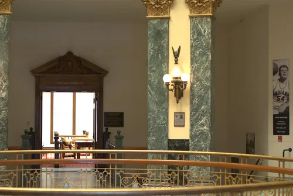

이재명 대통령, 공소청 직제안에 제동…"사법통제부 명칭·검사 정원 다시 검토"
이재명 대통령이 법무부가 마련한 '공소청과 그 소속기관 직제' 제정안 및 검사정원법 시행령 개정안에 대해 미흡한 점이 있다며 수정·보완을 지시한 것으로 11일 전해졌다. 검찰청을 폐지하고 기소·공소유지 기능만 담당하는 공소청을 새로 출범시키는 수사·기소 분리 개혁이 다음 달 초 시행을 앞둔 가운데, 정부가 마련한 조직 설계의 세부 내용을 두고 대통령이 직접 재검토를 요구하면서 개혁 막바지 작업에 다시 속도 조절이 불가피해졌다.
공소청은 이재명 정부가 추진해 온 검찰개혁의 핵심 결과물이다. 2025년 10월 공포된 정부조직법 개정에 따라 기존 검찰청이 폐지되고, 기소와 공소유지만 전담하는 공소청과 부패·경제범죄 등 중대 범죄 수사를 맡는 중대범죄수사청이 각각 새로 출범해 그동안 검찰이 독점해 온 수사·기소·공소유지 기능을 여러 기관으로 나누는 것이 골자다. 오는 10월 2일 시행을 목표로 법무부가 공소청 조직과 정원을 구체화하는 하위 법령 작업을 마무리하는 단계였다.

이 대통령이 문제 삼은 대목은 크게 두 가지다. 우선 검사 정원이다. 법무부가 마련한 정부안은 공소청 소속 검사 2292명과 일반직 6120명 등 총 8412명 규모로, 전체 인력은 현행 검찰청 대비 약 20% 줄어드는 반면 검사 정원 자체는 현재 수준을 그대로 유지하는 내용이었다. 이 대통령은 기존 검찰청 정원법상의 검사 숫자를 그대로 전제로 삼기보다, 수사권이 중대범죄수사청 등으로 분산되는 공소청 출범 취지에 맞춰 정원을 새로 산정할 필요가 있다는 뜻을 밝힌 것으로 전해졌다.
또 하나는 조직 명칭이다. 정부안에 담긴 '사법통제부'라는 새 조직 명칭에 대해 이 대통령은 그 역할과 위상에 비해 명칭이 과도하거나 부적절할 수 있다는 지적을 내놓은 것으로 알려졌다. 검찰개혁의 취지가 수사와 기소 권한을 나누어 상호 견제 구조를 만드는 데 있는 만큼, 새로 만들어지는 조직의 이름 하나에도 개혁의 방향성이 왜곡되지 않도록 신중을 기해야 한다는 문제의식이 반영된 것으로 풀이된다.
법무부는 대통령 지시에 따라 직제안과 검사정원법 시행령을 다시 손질해야 하는 상황이다. 다만 검사 정원을 실제로 줄이는 작업은 간단치 않다는 관측이 나온다. 현직 검사들의 신분과 직결되는 문제인 데다, 중대범죄수사청으로의 인력 재배치, 기존 검찰 조직의 업무 공백 우려 등을 함께 고려해야 하기 때문이다. 법조계 안팎에서는 정원 재산정과 명칭 변경이 맞물리면서 하위 법령 정비 작업에 추가 시간이 소요될 수 있다는 전망도 나온다. 여기에 조직 개편이 실무에 착오 없이 안착하려면 현장 검사들과 실무 협의체의 의견 수렴 절차도 병행돼야 한다는 지적이 법조계 일각에서 제기된다.
이번 재검토 지시는 10월 2일로 예정된 공소청 출범 일정 자체를 흔드는 것은 아니지만, 새 조직의 세부 설계를 둘러싼 정부 내 이견이 시행 직전까지 이어지고 있음을 보여준다. 정치권에서는 검찰개혁의 상징적 결과물인 공소청이 출범 초기부터 조직 설계를 둘러싼 논란에 휩싸이지 않으려면, 남은 기간 정원 산정 기준과 조직 명칭에 대한 사회적 공감대를 충분히 확보하는 절차가 필요하다는 지적도 제기된다.
정기국회가 인사청문회와 국정감사, 예산안 심사로 이어지는 시기와 맞물려 있는 만큼, 공소청 직제 정비를 둘러싼 논의는 법무부 내부 작업에 그치지 않고 국회 관련 상임위 논의로 확산될 가능성도 거론된다. 법무부가 수정안을 마련해 다시 보고하는 시점과 그 내용에 따라, 수사·기소 분리 개혁의 마지막 퍼즐로 꼽히는 공소청 출범 준비 작업의 향방이 갈릴 것으로 보인다.